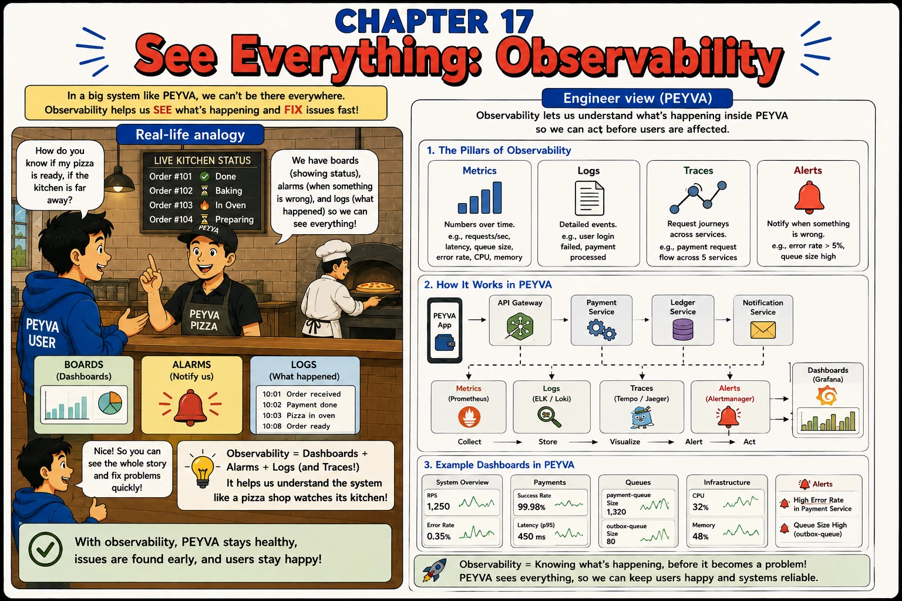

Chapter 17
See Everything: Observability
In a big system like peyva, you can't watch everything directly. Observability shows what's happening and helps you fix issues fast.

1. What
- Observability. How much you can tell about a running system from the outside, without stopping it or attaching a debugger.
- Structured Logs. One event per line with named fields instead of sentences, so you can filter by payment reference.
- Correlation ID. The value every line about one request carries, here the payment reference, so you can piece its path together.
- Metrics. Numbers over time: payments, failures, unknown outcomes, jobs waiting, how far behind the second copy is.
- Traces. Where a request went and how long each hop took. Lines sharing a reference, with timestamps, are the simple version.
- Health Endpoint. Says whether this program and the things it needs are working. Never a hardcoded ok.
2. Why
- You cannot debug this by stopping it. The failure was an hour ago, on one of three copies, in a request that has finished.
- Every line about a payment carries its reference. One search should then show its whole path.
- Numbers tell you something is wrong. Lines tell you what happened. Their timestamps tell you where the time went.
- A health check that always says ok is a lie the load balancer believes. 'Struggling' is a real answer.
- Watch what warns you early: jobs waiting, how far behind the copy is, payments with an unknown outcome.
- Every useless line is one someone reads past at 3am. Log less, and put more in each line.
3. How Hands-on Building in Go, change in Chapter 0
Two choices first: the language you are building in, and the system you are on. Make them in Chapter 0. The prompts below stay locked until you do.
Written for Windows, in PowerShell, change in Chapter 0
Style Prompting Telling the assistant the tone and voice to write in, and who will read it.
Why here: Writing logs for one on-call engineer at 3am changes what gets logged, not only how it reads.
Read more: The Prompt Report: Zero-Shot, Style Prompting
Every prompt below is copied with these rules, about 279 tokens for the chapter
Build this in Go, standard library only.
Code in peyva/<component>/, one folder per component.
Money: exact decimal or integer minor units, never floating point, two decimal places.
The goal and invariants are in peyva/goal.md.
Finish with the command to run and the Portal address. Show output as a table.
1 of 2 Build~279 tokens
The system prints to the console and counts nothing. When something breaks, there is no way to find out what happened. Write it for one reader: an on-call engineer, woken at 3am, who did not write this code, looking at yesterday's records for one failed payment. One event per line, with the payment reference on every line that payment touches, and timestamps fine enough to show where the time went. Counts of payments, failures, unknown outcomes, jobs waiting, and how far behind the follower is. GET /health on every process reports what is actually true, never a hardcoded ok. If a line would not help that person at 3am, leave it out. Done when one failed reference rebuilds its whole path from the logs alone, and health reports trouble when the follower is unreachable or the lease is not held.
2 of 2 TryYou
Run from the folder that holds peyva/.
curl.exe -s -X POST http://127.0.0.1:9310/accounts -H 'Content-Type: application/json' -d '{\"handle\":\"dave\"}' -w '\n'
curl.exe -s -X POST http://127.0.0.1:9320/close -H 'Content-Type: application/json' -d '{\"handle\":\"dave\"}' -w '\n'
curl.exe -s -m 30 -X POST http://127.0.0.1:9310/pay -H 'Content-Type: application/json' -d '{\"from\":\"alice\",\"to\":\"dave\",\"amount\":5}' -w ' -> %{http_code}\n'
curl.exe -s http://127.0.0.1:9311/health -w '\n'
Get-NetTCPConnection -LocalPort 9301 -State Listen | ForEach-Object { Stop-Process -Id $_.OwningProcess -Force }
Start-Sleep -Seconds 5
curl.exe -s http://127.0.0.1:9311/health -w '\n'
curl.exe -s -X POST http://127.0.0.1:9310/accounts -H "Content-Type: application/json" -d "{\"handle\":\"dave\"}" -w "\n"
curl.exe -s -X POST http://127.0.0.1:9320/close -H "Content-Type: application/json" -d "{\"handle\":\"dave\"}" -w "\n"
curl.exe -s -m 30 -X POST http://127.0.0.1:9310/pay -H "Content-Type: application/json" -d "{\"from\":\"alice\",\"to\":\"dave\",\"amount\":5}" -w " -> %{http_code}\n"
curl.exe -s http://127.0.0.1:9311/health -w "\n"
for /f "tokens=5" %p in ('netstat -ano ^| findstr ":9301 " ^| findstr LISTENING') do taskkill /PID %p /F
timeout /t 5 /nobreak >nul
curl.exe -s http://127.0.0.1:9311/health -w "\n"
curl -s -X POST http://127.0.0.1:9310/accounts -H 'Content-Type: application/json' -d '{"handle":"dave"}' -w '\n'
curl -s -X POST http://127.0.0.1:9320/close -H 'Content-Type: application/json' -d '{"handle":"dave"}' -w '\n'
curl -s -m 30 -X POST http://127.0.0.1:9310/pay -H 'Content-Type: application/json' -d '{"from":"alice","to":"dave","amount":5}' -w ' -> %{http_code}\n'
curl -s http://127.0.0.1:9311/health -w '\n'
kill $(lsof -ti tcp:9301)
sleep 5
curl -s http://127.0.0.1:9311/health -w '\n'
curl -s -X POST http://127.0.0.1:9310/accounts -H 'Content-Type: application/json' -d '{"handle":"dave"}' -w '\n'
curl -s -X POST http://127.0.0.1:9320/close -H 'Content-Type: application/json' -d '{"handle":"dave"}' -w '\n'
curl -s -m 30 -X POST http://127.0.0.1:9310/pay -H 'Content-Type: application/json' -d '{"from":"alice","to":"dave","amount":5}' -w ' -> %{http_code}\n'
curl -s http://127.0.0.1:9311/health -w '\n'
fuser -k 9301/tcp
sleep 5
curl -s http://127.0.0.1:9311/health -w '\n'
Quick tip: A metric tells you something's wrong; a log tells you what happened; a trace tells you where.